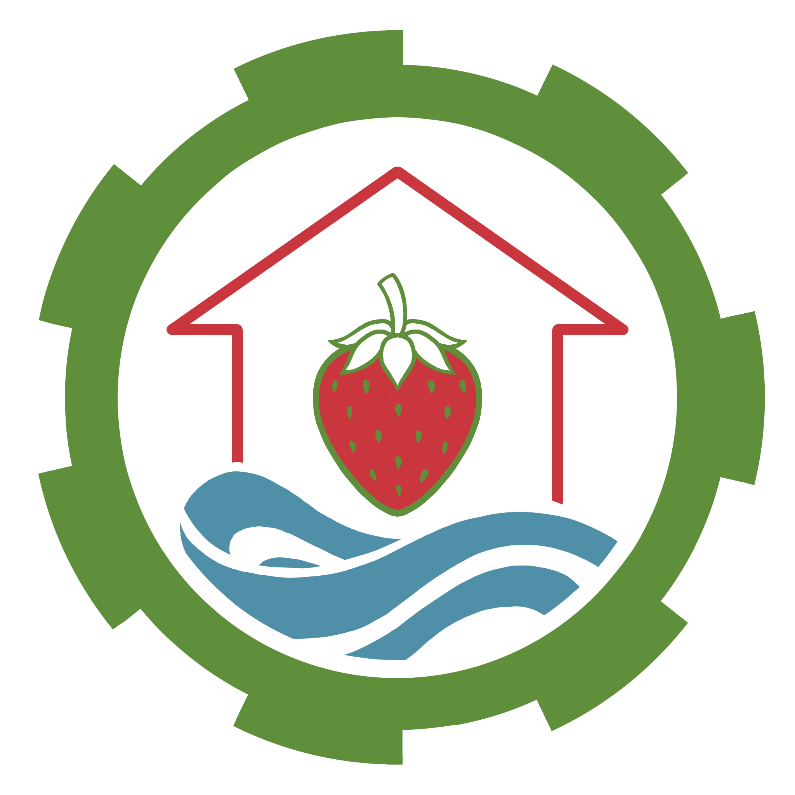

PROYECTO PRODUCTIVO
Invernadero de
Fresas 🍓
Tecnología, innovación y agricultura sostenible para cultivar fresas de una manera más eficiente.
Conoce nuestro proyecto
NUESTRO PROYECTO
Tecnología que ayuda
a cultivar el futuro
INVERFRESAS es un proyecto productivo basado en la implementación de tecnología y automatización en el cultivo de fresas.
Nuestro invernadero utiliza Arduino y diferentes sensores para monitorear las condiciones del cultivo y automatizar procesos como el riego y la ventilación.
Cultivo
Producción de fresas
Automatización
Sistema controlado con Arduino
Ahorro de agua
Riego según la humedad del suelo
Sostenibilidad
Uso eficiente de los recursos
TECNOLOGÍA
¿Cómo funciona nuestro invernadero?
Nuestro sistema utiliza Arduino y sensores para monitorear y controlar las condiciones del cultivo.
1. Sensor de humedad
El sensor mide la humedad del suelo para determinar cuándo las plantas necesitan agua.
2. Arduino
Arduino recibe la información de los sensores y controla automáticamente el sistema.
3. Sistema de riego
Cuando el suelo necesita agua, se activa la bomba para realizar el riego.
4. Temperatura
Los sensores monitorean la temperatura y humedad del ambiente dentro del invernadero.
5. Ventilación
Si las condiciones lo requieren, el sistema activa el ventilador para regular el ambiente.